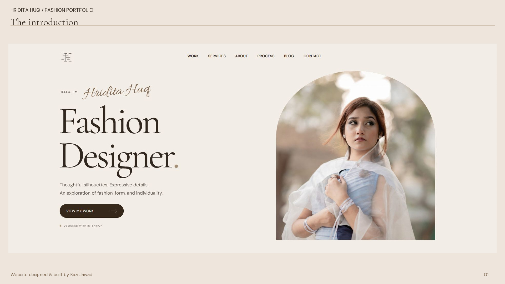
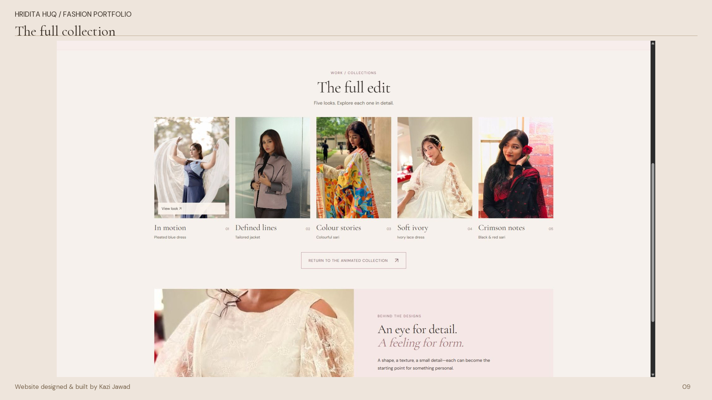
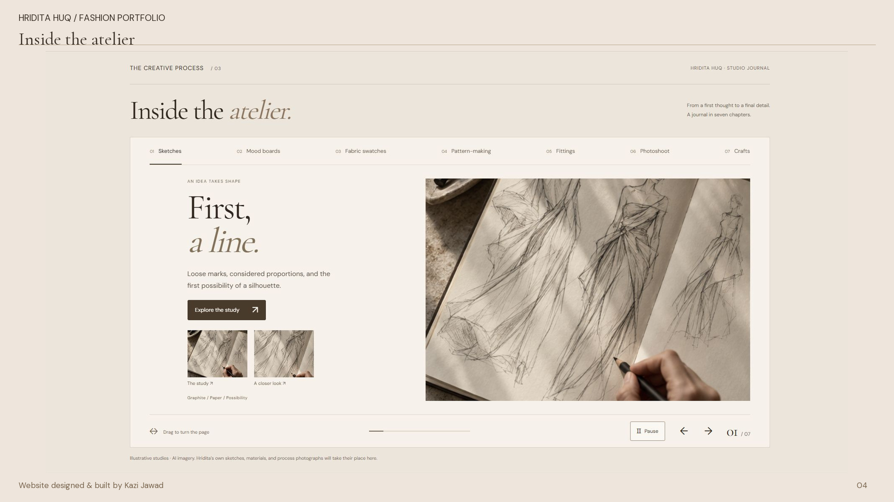

Articles & Projects / 05
Hridita Huq — Fashion Portfolio
An editorial fashion portfolio built around movement, detail, and discovery.

This portfolio turns fashion photographs into a connected editorial experience. I used an ivory-and-chocolate palette, expressive typography, and layered motion to introduce the designer and lead visitors through collections, process studies, and stories.
1. From runway to individual look
The animated collection gives each photographed look its own moment. Individual pages reveal palettes, visual details, and related work. Visitors can move through the runway by touch or keyboard, with pause/play and reduced-motion support.

2. A connected creative process
Seven atelier chapters cover sketches, mood boards, fabric swatches, pattern-making, fittings, photoshoot, and crafts. Selectable observations bring attention to details. The journal opens stories in a reading dialog, pausing cycling and restoring focus when it closes.

3. A lightweight editorial build
The site uses static HTML, CSS, and JavaScript with responsive layouts. Collection photographs are supplied assets; the process illustrations and sample journal stories demonstrate the layout and are not presented as verified completed client work.